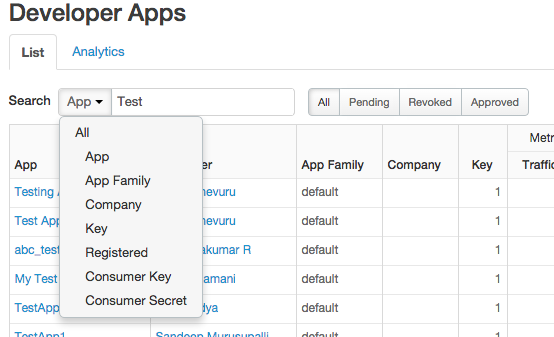

[toc]
This topic explains how to register and manage apps by using the Apigee Edge management UI. The steps described in this topic require an Edge user with an org admin role or, otherwise, a role that grants sufficient permission to create and/or edit developer apps.
If you have a Developer Services portal, developers can register their own apps. See http://docs.apigee.com/node/292 for more.
Let's assume you are an API provider and you have created one or more API products to bundle your APIs, as explained in http://docs.apigee.com/node/9. Typically, developers who want to consume your APIs go to your developer portal and register to use them. When registering, the developer gets to select which of your API products he or she wishes to use. For example, some products may be offered for free, while others require payment depending on a service plan. Upon completion, this registration step produces an Edge entity called a developer app. A developer app includes the products the developer selected and a set of API keys that the developer will be required to use to access the APIs that are associated with those products. See http://docs.apigee.com/node/292 for more on developer portals.
However, a developer portal is not the only way to create developer apps. An Edge org admin, or another individual with the appropriate permissions, can also create developer apps directly in the Edge UI. As an API provider, you might want to maintain complete control over the app registration process and choose to register apps by using the Edge management UI. For example, you may want to register apps for your internal development teams or on behalf of a developer without access to your portal. Similar to registration through a portal, when you register an app in the Edge UI, you decide which API products to associate with it. When the app is registered, Edge automatically generates an API key to grant access to the selected API products. It is then up to you (the API provider) to determine how to pass that key to the app developer. Note that any additional API products you associate with the app all use the same key.
Apps provide the main mechanism for API providers to control who can access their APIs. At any time, someone with appropriate Edge organization permissions can revoke an app's key, preventing it from accessing all API products referenced by that app. Or access to a single API product associated with the app can be revoked.
[[{"type":"media","view_mode":"media_original","fid":"163","attributes":{"alt":"","class":"media-image","height":"381","style":"border-width: 0px; border-style: solid; margin: 25px 55px; width: 400px; height: 272px;","typeof":"foaf:Image","width":"561"}}]]
As an org admin (or someone with appropriate role permissions), you can see all of your organization's apps in the Edge management UI on the Publish > Developer Apps summary page. This page displays performance data for each app, and general information on app keys. You can select a specific app from the table to get more detailed information, including the API products that app can access and the resources those products expose. You can also see the key associated with the app.
Note: You must be an org admin or someone with sufficient role permissions to perform these tasks.
To register an app:
Note: You must be an org admin or someone with sufficient role permissions to perform these tasks.
API calls to API proxies usually require an API key. Edge lets the calls through only if the API key is active, valid, and meets the conditions defined by the API product containing the API.
When you create an API product, you can also set its access mode to Internal only or Private. API products marked Internal only or Private do not appear to developers on the developer portal. To get access to these products, you manually add them to a developer's app from the Edge management UI.
If an API product is configured for Automatic approval of API keys, you don't need to do anything. However, if a product requires manual approval of API keys, follow this procedure.
You can also approve API keys using the management API.
You can revoke an API key, which means that particular key and secret are no longer valid for accessing APIs in the associated API product(s). You can re-enable access at any time by clicking Approve.
(If you want to keep the key approved but prevent it from being used on a particular product, see the next section, "Revoking or removing an API product from an API key.")
You can also revoke API keys using the management API.
If you want to keep an API key active but not allow it to be used with one or more API products, you can revoke or remove the products associated with the API key. Revoking keeps a product associated with the API key but doesn't allow the key to be used with it, and removing completely disassociates the API product from the API key.
You can re-approve a revoked product or re-add a removed product.
You can also use the management API for this procedure. See http://docs.apigee.com/node/18736 and http://docs.apigee.com/node/18731.
Deleting an API key removes the key and secret, which can no longer be used in API calls to APIs in the associated product(s).
You can also delete API keys using the management API.
You can generate a new API key/secret pair for a developer app. For instance, if you're using API key rotation, you can generate new keys whose expiration overlaps keys that will be out of rotation when they expire. You might also generate a new key/secret if the security of the original key/secret is compromised. After generating a new key, be sure to revoke or remove any other keys you no longer want to be used.
To generate a new API key with the management API, see http://docs.apigee.com/node/18781.
If you create custom keys (next procedure), this procedure does not regenerate those keys.
If you have existing consumer keys and secrets you want to import into Edge, or you want to create custom API keys, see http://docs.apigee.com/node/19351.
Note: You must be an org admin or someone with sufficient role permissions to perform these tasks.
To edit an app:
Note: You must be an org admin or someone with sufficient role permissions to perform these tasks.
When you revoke a developer app, any approved API keys can no longer be used in API calls to Edge. On the Developer App Details page, the key status label on the API keys is shown in strikethrough text (Approved or Revoked); and if you mouse over the label, the tooltip says the app is revoked. If you re-approve the app, the strikethrough text on API key status disappears, and approved API keys are valid again.
Revoke a developer app in the management UI
It may take a few minutes for the change to be recognized by all message processors. Until then, it's possible that some calls using the API keys might continue to get through.
Revoke a developer app with the management API
See http://docs.apigee.com/node/18776.
If the app is registered in other organizations, you must also revoke it in each of those organizations as well.
You can re-approve a developer app by editing the app and clicking Approve in the App Status field. When you do, all approved API keys are available for use. Again, it may take a few minutes for the change to be recognized on all message processors.
Note: You must be an org admin or someone with sufficient role permissions to perform these tasks.
If you delete an app, all client keys associated with the apps become invalid. Using an invalid key on a request causes the request to fail.
To delete an app:
The search menu has a dropdown menu that you can use to search for specific developer app attributes, such as App Family, Consumer Key, and others.
